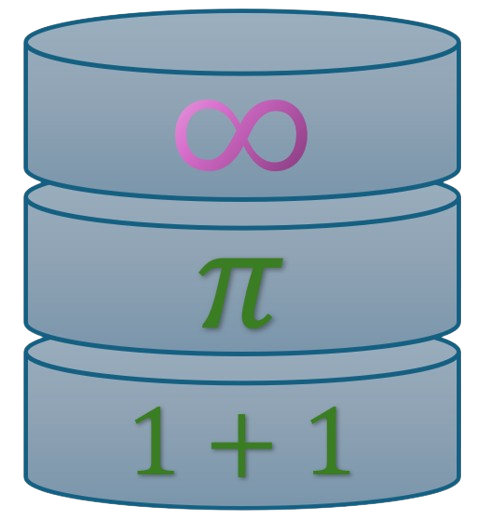
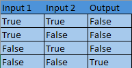
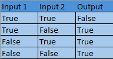

xor(x: bool, y: bool) -> bool
Logic gate XOR.
XOR truth table:

Added in v0.1.0
Example usage:
> print(xor(True, False))
Output:
True

The QuikArit library adds miscellaneous/QoL functions to Python.
Jump to
Returns the xth root of y.
Added in v0.1.0
Deprecated in v0.2.0
> print(GetxthRoot(3, 8))
Output:
2.0
Returns the divisors of x.
Added in v0.1.0
> print(GetDivisors(8))
Output:
[1, 2, 4, 8]
Returns the magnitude of the x, y, z vector. (z is optional).
Added in v0.1.0
> print(Magnitude(3, -4, 12))
Output:
13.0
Returns the hypotenuse of the right triangle whose cathetuses are x and y.
Added in v0.1.0
> print(pythsTheorem(1, 1))
Output:
1.4142135623730951
Returns True if x is prime, False if not.
Added in v0.1.0
> print(isPrime(7))
Output:
True
Returns the xth element from the periodic table.
Added in v0.1.0
> print(GetElementFromPeriodicTable(10))
Output:
"Ne"
Checks if the number n is a perfect square, returns True if so, False otherwise.
Added in v0.1.0
> print(isPerfectSquare(25))
Output:
True
Generates a fibonacci sequence of length reps.
Added in v0.1.0
> print(fib(5))
Output:
[1, 1, 2, 3, 5]
Gets the modulo of x.
Added in v0.1.0
Deprecated in v0.2.0
> print(modulo(-4))
Output:
4.0
Returns x% of y.
Added in v0.1.0
Deprecated in v0.2.0
> print(Percent(2, 100))
Output:
2.0
Returns the area of a regular hexagon using x as the side.
Added in v0.1.0
> print(hexArea(10))
Output:
259.8076211353316
Returns a pseudorandom color. hasAlpha determines if the color has the alpha channel (transparency).
Added in v0.1.0
> print(hexcolorRandom(True))
Output:
"#6E6F0500"
Calculates the termial of x.
$$\sum_{n=1}^{x} n$$
Added in v0.3.0
> print(termial(3))
Output:
6
Calculates the factorial of x.
$$\prod_{n=1}^{x} n$$
Added in v0.3.0
> print(factorial(4))
Output:
24
Returns the mean of a list.
Added in v0.1.0
> print(mean([8, 5, 2, 3]))
Output:
6.25
Returns the median of a list.
Added in v0.1.0
> print(median([8, 5, 2, 3]))
Output:
3.5
Returns the geometric mean of a list.
Added in v0.1.0
> print(geoMean([2, 4, 5, 6]))
Output:
3.9359793425308607
Calculates the standard deviation of list x.
Added in v0.3.0
> print(standardDeviation([1, 2, 3]))
Output:
1.0
Logic gate XOR.
XOR truth table:
Added in v0.1.0
> print(xor(True, False))
Output:
True
Logic gate XOR.
XNOR truth table:

Added in v0.1.0
> print(xnor(True, False))
Output:
True
Logic gate NOR.
NOR truth table:

Added in v0.2.0
> print(nor(True, False))
Output:
False
Logic gate NAND.
NAND truth table:

Added in v0.2.0
> print(nand(True, False))
Output:
True
Takes two inputs x and y in the format "a+bi" and adds them.
Added in v0.1.0
> print(ComplexAdd("1+2i", "1+2i"))
Output:
"2+4i"
Takes two inputs x and y in the format "a+bi" and subtracts them.
Added in v0.1.0
> print(ComplexSub("1+2i", "2+2i"))
Output:
"-1+0i"
Takes two inputs x and y in the format "a+bi" and multiplies them.
Added in v0.1.0
> print(ComplexMult("1+2i", "2+2i"))
Output:
"-2+6i"
Takes two inputs x and y in the format "a+bi" and divides them.
Added in v0.2.0
> print(ComplexDiv("1+2i", "2+4i"))
Output:
"0.5+0i"
Takes two inputs x and y in the format "bi" and multiplies them.
Added in v0.1.0
> print(imaginaryMult("4i", "2i"))
Output:
"8i"
Takes two inputs x and y in the format "bi" and divides them.
Added in v0.1.0
> print(imaginaryDiv("4i", "2i"))
Output:
"2i"
Takes two inputs x and y and adds their numbers.
Added in v0.1.0
Patched in v0.2.0
> print(matrixsum([1, 2], [3, 4]))
Output:
[4, 6]
Takes two inputs x and y and subtracts their numbers.
Added in v0.1.0
Patched in v0.2.0
> print(matrixsub([1, 2], [3, 4]))
Output:
[-2, -2]
Takes two inputs x and y and multiplies them.
Added in v0.2.0
> print(matrixmult([[1, 2], [1, 2]], [[1, 2, 3],
[1, 2, 3]]))
Output:
[[3, 6, 9], [3, 6, 9]]
Takes a matrix x and calculates its determinant (up to 4x4).
Added in v0.2.0
> print(matrixdet([[1, 2], [1, 2]]))
Output:
0
Flips the matrix sideways.
Added in v0.2.0
> print(flipMatrixSideways([[1, 2, 3], [1, 2, 3]]))
Output:
[[1, 1], [2, 2], [3, 3]]
Converts radians to degrees.
Added in v0.1.0
> print(rad2deg(2*3.14))
Output:
360.0
Converts degrees to radians.
Added in v0.1.0
> print(deg2rad(360))
Output:
6.28318530718
Converts binary to decimal.
Added in v0.1.0
> print(bin2dec("1010"))
Output:
10
Converts decimal to binary.
Added in v0.1.0
> print(dec2bin(10))
Output:
"1010"
Converts hexadecimal to decimal.
Added in v0.1.0
> print(hex2dec("1A"))
Output:
26
Converts hexadecimal to binary.
Added in v0.1.0
> print(hex2bin("0A"))
Output:
"1010"
Converts octal to binary.
Added in v0.2.0
> print(oct2bin(7))
Output:
'111'
Converts octal to decimal.
Added in v0.2.0
> print(oct2dec(7))
Output:
7
Converts hexadecimal to binary.
Added in v0.3.0
> print(hex2bin('FF'))
Output:
'11111111'
Converts decimal to hexadecimal
Added in v0.3.0
> print(dec2hex(10))
Output:
'A'
Converts binary to hexadecimal.
Added in v0.3.0
> print(bin2hex('11111111'))
Output:
'FF'
Checks if the list x is sorted. Returns True if so, False otherwise.
The orient parameter determines if the checking will occur from the smallest to the biggest (None/True), or the opposite (False)
Added in v0.1.0
> print(isSorted([1, 2, 3], None))
Output:
True
Flips the order of elements in a list.
Added in v0.1.0
> print(flipList([0, 1, 2]))
Output:
[2, 1, 0]
Sorts the list x by shuffling it randomly until it is sorted.
Added in v0.1.0
Avg.
$$n \cdot n!$$
> print(bogoSort([0, 1, -1]))
Output:
[-1, 0, 1]
Sorts the list x by getting the smallest number in the list and moving it to the first index of the list and so on.
Added in v0.1.0
Avg.
$$n^2$$
> print(selectionSort([1, 2, -1]))
Output:
[-1, 1, 2]
"Sorts" the list by removing every number out of order.
Added in v0.1.0
> print(stalinSort([1, 2, -1]))
Output:
[1, 2]
Sorts the list x by switching the numbers out of order until they are sorted.
Added in v0.2.0
> print(bubbleSort([3, 4, 2, 1]))
Output:
[1, 2, 3, 4]
Solves quadratic equations strictly in the form of ax^2+bx+c(=0).
Don't put the '=0' part.
Added in v0.3.0
> print(solveQuadratic('2x^2+2x+3'))
Output:
[(-0.49999999999999994+1.118033988749895j), (-0.5...
Calculates the summation of expression expr.
$$\sum_{variable=startingValue}^{upperLimit} expr$$
Added in v0.3.0
> print(summation(3, 'x', 1, '2x'))
Output:
12.0
Calculates the product of expression expr.
$$\prod_{variable=startingValue}^{upperLimit} expr$$
Added in v0.3.0
> print(product(3, 'x', 1, '2x'))
Output:
48.0
Calculates the sine of x (in radians) with accuracy tune.
Added in v0.3.0
> print(sin(3.14159, accuracy=25))
Output:
2.653589793297756e-06
Calculates the cosine of x (in radians) with accuracy tune.
Added in v0.3.0
> print(cos(3.14159, accuracy=25))
Output:
-0.999999999996479
Calculates the tangent of x (in radians) with accuracy tune.
Added in v0.3.0
> print(tan(3.14159, acc=25))
Output:
-2.653589793307099e-06
Calculates the arctangent of x (in radians) with accuracy tune.
Added in v0.3.0
> print(arctan(1, acc=25))
Output:
0.7757863282215032
Calculates the angle (in radians) of linear function x in the form of y=mx+b.
Added in v0.3.0
> print(slopeAngle('x'))
Output:
0.7934605842976876
Calculates the m in the y=mx+b formula.
! Attention -- x is in radians.
Added in v0.3.0
> print(findSlopebyAngle(0.7757863282215032))
Output:
0.981